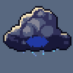
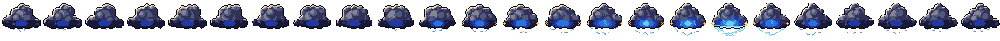
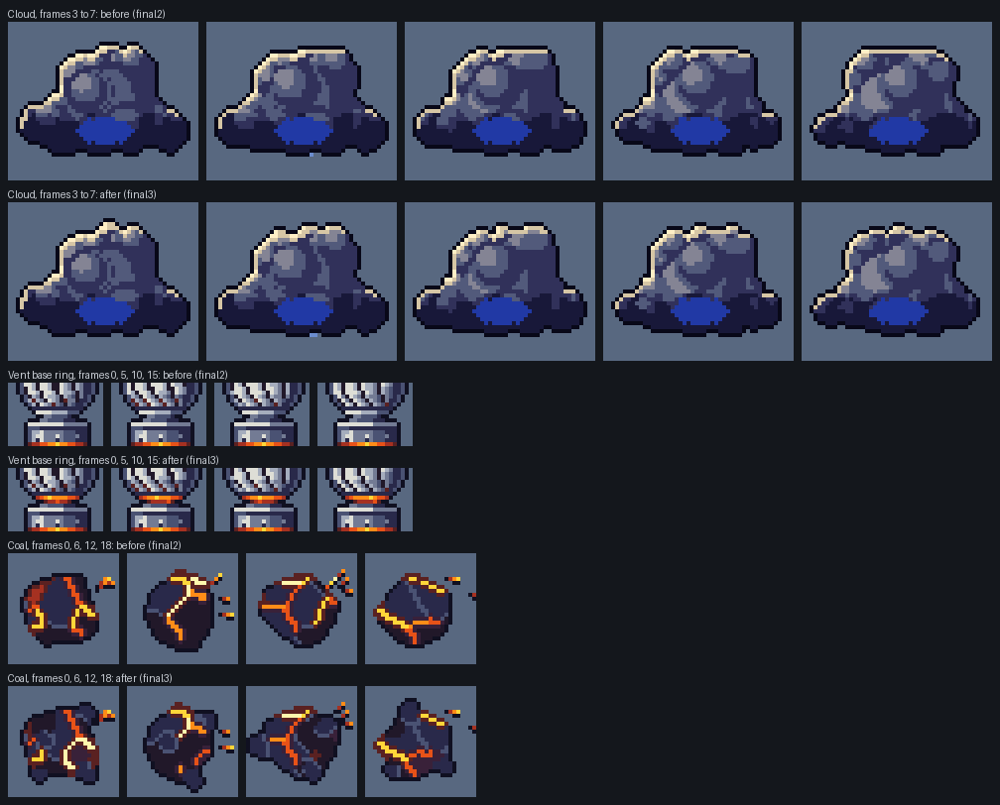
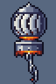
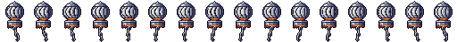
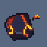
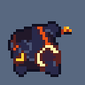
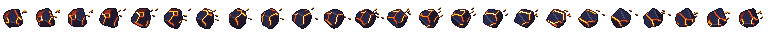
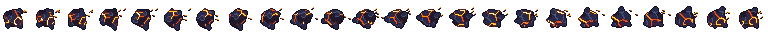
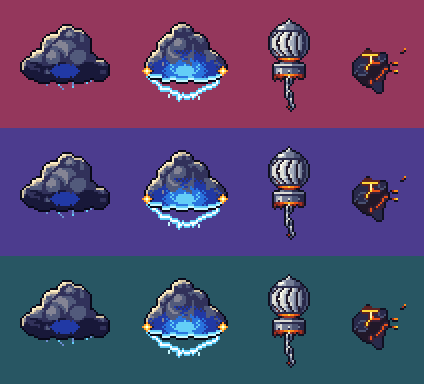

Skip-rope squall




The three sheets before (final2) and after (final3) this pass. Drafts only, nothing here is wired into the game.
Cloud frames 3 to 7, the base ring of the vent, four frames of the coal. Upper row of each pair: final2. Lower row: final3.











Left to right: the cloud at rest, the cloud on its strike frame, the vent, the coal. Top to bottom: Dusk, Moon, Storm. Two times size.

The top billows of frames 2 to 9, 16 and 17 are drawn by hand, pixel by pixel (table _TOPS in the script). The fault (a flat top outline of 7 to 19 px) was in frames 2, 4 to 9, 16 and 17; frame 3 is redrawn so the shapes flow through it. The right billow rises in frame 2, splits in 3 and 4 and sinks from 5 to 7; one small nub stays in place from 4 to 9; the left shoulder lump drifts left.
At rest the trail is now 3 px dashes of periwinkle with one cyan head pixel each (final2: 2 px periwinkle). While the charge builds the dash grows to 4, 5 and 6 px and 1, 2 and 3 of its pixels are cyan (final2 used deep blue there, which is darker than the moon sky). The strike frame is unchanged: white core, cyan halo, one frame.
The lip of the base ring (row 21) glows orange with red orange ends and rust at the shaded end; its underside (row 22) is rust and deep red. One yellow glint and one red orange pixel move along it by a hand-set table, different in each of the 16 frames. Blades, collar and chain are untouched: steel, no stripes, no dither.
The lump is no longer convex. Four lumps stand out of it (a long spur, two knobs, a stub) and four bites are scooped out beside them; one bite is a hot break with a glowing edge. All eight are fixed to the lump, so the same breaks tumble with it. Their positions are hand-picked so that every frame shows a break in the outline.
Frame sizes, frame counts, ticks per frame, hit boxes, two palettes of 15 colours, JSON format, one strike frame per loop.
1. Coal: the lumps are built from small rounded shapes, so in some frames a break reads as a bump, not a sharp chip. No coal pixel is placed by hand; only the positions of the eight breaks are hand-picked.
2. Cloud: the hand-drawn tops cover the top 3 or 4 rows only. The shading under them is still the rule-drawn one, frames 10 and 11 keep a flat run of 6 px, and the right flank of frames 8 to 10 is still a straight wall.
3. Vent: the hot rim is 2 px on a ring 11 px wide. It reads as a warm line, not as glowing metal, and the flicker is one or two pixels per frame.
Gum Trip moving hazards, second hand pass (final3). Measured by draw_moving_hazard_final3.py from the sheets it wrote.
Tiles are 16 x 16. Raw = non-empty tiles over all frames; unique = distinct after removing exact duplicates;
with flips = distinct when horizontal and vertical mirror copies also count as duplicates.
Loop seam = pixels that differ between the last frame and frame 0, beside the same count for the other
neighbouring frame pairs (mean and largest). A seam inside that range means no pop.
Stray pixels = opaque pixels whose colour touches no pixel of the same colour, mean per frame.
Hand-placed pixels = pixels listed one by one in the script; changed = those that differ from the drawn rule.
Frame size 48 x 48 px, 24 frames in one row (sheet 1152 x 48), 4 ticks per frame (15 per second), loop 96 ticks = 1.60 s. Unchanged.
Palette "storm": 15 of 15 colours used in this sheet, plus transparent
Sprite columns 3 (16 px wide), 3 tiles tall
Tiles raw 214, unique 207 (final2 203, difference +4), unique with flips 207
Opaque bounding box over all frames x 2..47, y 3..42
Hit box x 7..42, y 8..32 (36 x 25), relative to the frame, unchanged: the cloud body only (user decision); the trail below the base and the flank sparks do not hurt. 69 % of the box is covered by the body in every frame.
Loop seam 262 px; other neighbouring frames mean 298 px, largest 608 px
Stray pixels per frame: 4.4 (final2 3.5)
Distinct frames in the loop: 24 of 24
Hand-placed pixels: 990 listed, 172 changed.
Gif frame time 70 ms (game 66.7 ms; gif timing has 10 ms steps)
Flash: one strike per loop, at frame 17, shown for 4 ticks (67 ms). One loop is 96 ticks, so 0.625 flashes per second per cloud (limit asked: under 3).
Flash size: 83 pale-cyan or white pixels in the strike frame = 3.6 % of the 48 x 48 frame, 8.3 % of its opaque pixels. No other frame has more than 0. The frame before has 0, the frame after 0: never two bright frames in a row.
Same check by brightness (pixels above luma 200, which also counts the cream rim): strike frame 109 = 4.7 % of the frame; frame before 18, frame after 20, largest other frame 23. No full-sprite white frame.
Same check with cyan counted as bright (cyan, pale cyan, white; cyan has luma 179): strike frame 239 = 10.4 % of the frame; frame before 57, frame after 41, largest other frame 57; at rest 0..4.
Trail at rest: 0..12 trail pixels below the base per frame (0 where the rope swings behind the cloud, frames 2 to 8) (cyan luma 179, periwinkle luma 138). Sky luma: Dusk 87, Moon 74, Storm 74. The final2 charging trail used deep blue and blue (luma 62 and 105).
Charge: frames 4..16 build (52 ticks), frame 17 strikes, frames 18..20 fade, frames 21..23 and 0..3 rest (a small blue glow stays in the belly).
Several clouds on screen: start them at the same loop phase or at phases at least 8 frames (32 ticks) apart. With 2 clouds that is at most 1.25 flashes per second.
Longest flat run of the top outline per frame, x 9..39 (px): 5 5 5 5 4 5 5 4 4 4 6 6 5 5 5 5 4 4 4 5 5 5 3 5. Final2: 5 5 9 5 12 13 12 19 9 10 6 6 5 5 5 5 7 8 4 5 5 5 3 5.
Hand-drawn top frames: 2, 3, 4, 5, 6, 7, 8, 9, 16, 17.
Frame size 32 x 48 px, 16 frames in one row (sheet 512 x 48), 4 ticks per frame (15 per second), loop 64 ticks = 1.07 s. Unchanged.
Palette "hot_metal": 13 of 15 colours used in this sheet, plus transparent
Sprite columns 2 (16 px wide), 3 tiles tall
Tiles raw 96, unique 91 (final2 91, difference +0), unique with flips 91
Opaque bounding box over all frames x 6..26, y 1..47
Hit box x 8..24, y 5..21 (17 x 17), relative to the frame, unchanged: the globe, 1 px inside its steel; collar and chain do not hurt. 96 % of the box is covered by the body in every frame.
Loop seam 183 px; other neighbouring frames mean 198 px, largest 219 px
Stray pixels per frame: 45.0 (final2 37.7)
Distinct frames in the loop: 16 of 16
Hand-placed pixels: 29 listed, 29 changed.
Gif frame time 70 ms (game 66.7 ms; gif timing has 10 ms steps)
No flash. Hot colours (orange red to pale yellow) per frame: 18..19 px, on the collar edge and the rim of the base ring.
Base ring rim: 16..16 warm pixels per frame on rows 21 and 22 (lip and underside), 2 px thick. Warm pixels on the globe above the ring (rows 0..19), all frames: 55.
Spin: 5 blade pitches per loop (12 blades). 5 and 16 share no factor, so the globe shows 16 different blade positions; the loop closes because the blades are alike.
Frame size 32 x 32 px, 24 frames in one row (sheet 768 x 32), 3 ticks per frame (20 per second), loop 72 ticks = 1.20 s. Unchanged.
Palette "hot_metal": 11 of 15 colours used in this sheet, plus transparent
Sprite columns 2 (16 px wide), 2 tiles tall
Tiles raw 96, unique 96 (final2 96, difference +0), unique with flips 96
Opaque bounding box over all frames x 0..31, y 6..30
Hit box x 5..20, y 11..25 (16 x 15), relative to the frame, unchanged: the coal; sparks do not hurt. 100 % of the box is covered by the body in at least one frame of the tumble.
Loop seam 211 px; other neighbouring frames mean 208 px, largest 245 px
Stray pixels per frame: 6.3 (final2 6.9)
Distinct frames in the loop: 24 of 24
Hand-placed pixels: 0 listed, 0 changed.
Gif frame time 50 ms (game 50.0 ms; gif timing has 10 ms steps)
No flash: ember cracks breathe twice per loop (1.67 per second), each crack with its own phase; yellow or pale-yellow pixels per frame 1..28 of 1024 (2.7 % at most).
Grey pixels (steel mid and lighter) per frame: 0..0.
Broken outline, per frame: convex hull area minus coal area in px (0 = convex; the largest connected shape only, so sparks are left out): 74 59 63 42 40 68 34 30 34 36 47 55 53 42 66 59 46 36 40 44 59 64 66 67 (lowest 30). Final2, same measure: 20 33 39 20 32 48 39 19 16 18 24 41 47 21 18 18 33 20 18 18 42 38 42 54.
Breaks: 4 lumps and 4 bites, fixed to the lump. The lumps reach past the old outline, so the coal bounding box grows; the hit box stays inside the solid part: 204..229 of 240 hit box pixels are coal per frame.
Total unique tiles for the three kinds: 207 + 91 + 96 = 394 (with flips 394). Final2: 203 + 91 + 96 = 390. Difference +4.
Palettes: 2 for the three kinds, unchanged. "storm" (A) and "hot_metal" (B and C). RGB after 5-bit rounding:
storm 8,8,24 24,24,57 49,49,90 82,90,123 132,132,148 214,198,165 255,239,198 33,57,165 41,115,222 99,206,247 198,247,255 255,255,255 255,239,115 255,148,41 107,140,206
hot_metal 16,16,33 41,41,74 74,82,115 115,123,148 165,173,189 222,222,214 255,255,239 90,33,33 165,49,33 231,82,24 255,140,24 255,214,57 255,247,173 33,24,41 57,33,57
Mood colours in on_moods_2x.png: Dusk (148, 55, 92), Moon (76, 60, 142), Storm (40, 86, 99).
Gif background (88, 104, 128).